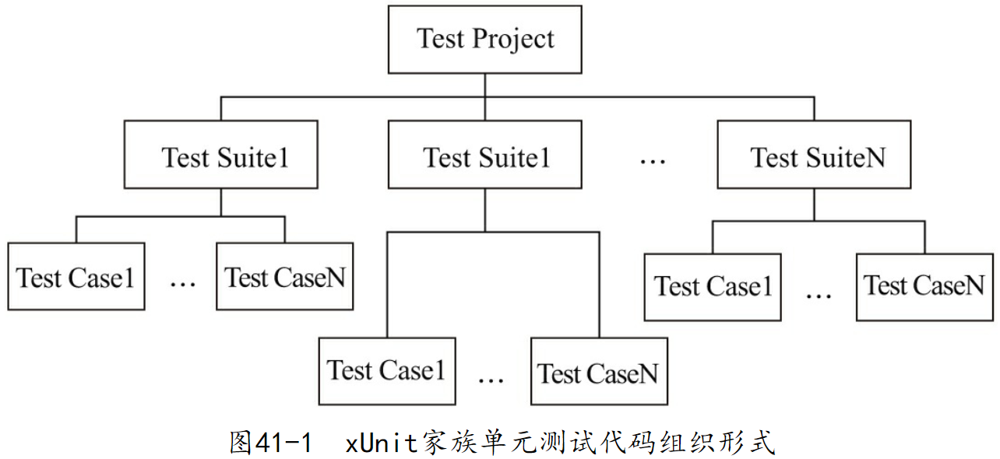
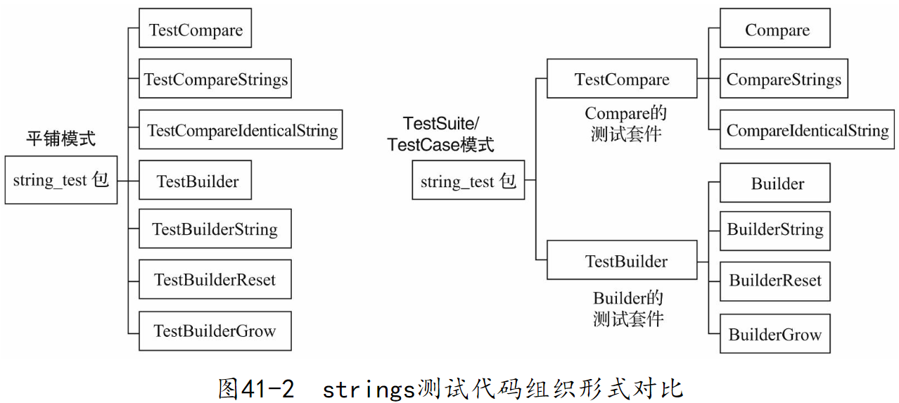
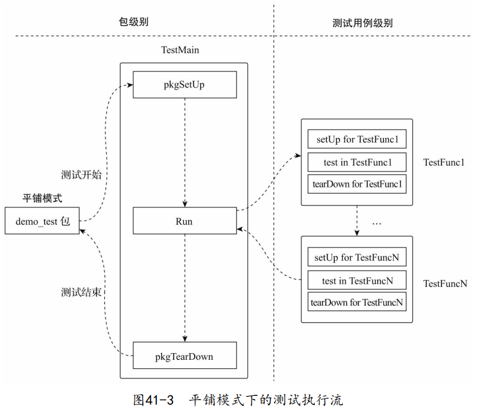
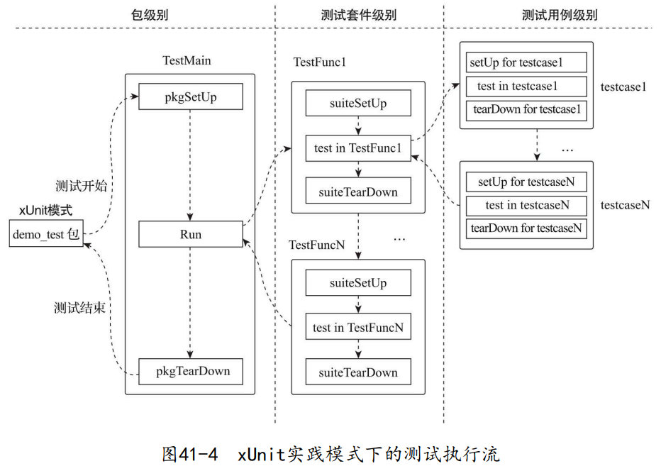

1. 经典模式——平铺
早期的测试代码采用了十分简单直接的组织方式——平铺。
下面是对Go1.5版本标准库strings包执行测试后的结果：
$ go test -v .
=== RUN TestCompare
--- PASS: TestCompare (0.00s)
=== RUN TestCompareIdenticalString
--- PASS: TestCompareIdenticalString (0.00s)
=== RUN TestCompareStrings
--- PASS: TestCompareStrings (0.00s)
=== RUN TestReader
--- PASS: TestReader (0.00s)
...
=== RUN TestEqualFold
--- PASS: TestEqualFold (0.00s)
=== RUN TestCount
--- PASS: TestCount (0.00s)
...
PASS
ok strings 0.457s
- 这些测试函数各自独立，测试函数之间没有层级关系，所有测试平铺在顶层。
- 测试函数名称既用来区分测试，又用来关联测试。
2. xUnit家族模式
在Java、Python、C#等主流编程语言中，测试代码的组织形式深受由极限编程倡导者Kent Beck和Erich Gamma建立的xUnit家族测试框架（如JUnit、PyUnit等）的影响。
使用了xUnit家族单元测试框架的典型测试代码组织形式如下图所示：

Go 1.7中加入的对subtest的支持让我们在Go中也可以使用上面这种方式组织Go测试代码：
// chapter8/sources/strings-test-demo/compare_test.go
package strings_test
...
func testCompare(t *testing.T) {
...
}
func testCompareIdenticalString(t *testing.T) {
...
}
func testCompareStrings(t *testing.T) {
...
}
func TestCompare(t *testing.T) {
t.Run("Compare", testCompare)
t.Run("CompareString", testCompareStrings)
t.Run("CompareIdenticalString", testCompareIdenticalString)
}
// chapter8/sources/strings-test-demo/builder_test.go
package strings_test
...
func testBuilder(t *testing.T) {
...
}
func testBuilderString(t *testing.T) {
...
}
func testBuilderReset(t *testing.T) {
...
}
func testBuilderGrow(t *testing.T) {
...
}
func TestBuilder(t *testing.T) {
t.Run("TestBuilder", testBuilder)
t.Run("TestBuilderString", testBuilderString)
t.Run("TestBuilderReset", testBuilderReset)
t.Run("TestBuilderGrow", testBuilderGrow)
}

运行一下改造后的测试：
$go test -v .
=== RUN TestBuilder
=== RUN TestBuilder/TestBuilder
=== RUN TestBuilder/TestBuilderString
=== RUN TestBuilder/TestBuilderReset
=== RUN TestBuilder/TestBuilderGrow
--- PASS: TestBuilder (0.00s)
--- PASS: TestBuilder/TestBuilder (0.00s)
--- PASS: TestBuilder/TestBuilderString (0.00s)
--- PASS: TestBuilder/TestBuilderReset (0.00s)
--- PASS: TestBuilder/TestBuilderGrow (0.00s)
=== RUN TestCompare
=== RUN TestCompare/Compare
=== RUN TestCompare/CompareString
=== RUN TestCompare/CompareIdenticalString
--- PASS: TestCompare (0.44s)
--- PASS: TestCompare/Compare (0.00s)
--- PASS: TestCompare/CompareString (0.44s)
--- PASS: TestCompare/CompareIdenticalString (0.00s)
PASS
ok strings-test-demo 0.446s
3. 测试固件
测试固件是指一个人造的、确定性的环境。一个测试用例或一个测试套件在这个环境中进行测试，其测试结果是可重复的。
下面是一些使用测试固件的常见场景：
- 将一组已知的特定数据加载到数据库中，测试结束后清除这些数据；
- 复制一组特定的已知文件，测试结束后清除这些文件；
- 创建伪对象（fake object）或模拟对象（mock object），并为这些对象设定测试时所需的特定数据和期望结果。
// chapter8/sources/classic_testfixture_test.go
package demo_test
...
func setUp(testName string) func() {
fmt.Printf("\tsetUp fixture for %s\n", testName)
return func() {
fmt.Printf("\ttearDown fixture for %s\n", testName)
}
}
func TestFunc1(t *testing.T) {
defer setUp(t.Name())()
fmt.Printf("\tExecute test: %s\n", t.Name())
}
func TestFunc2(t *testing.T) {
defer setUp(t.Name())()
fmt.Printf("\tExecute test: %s\n", t.Name())
}
func TestFunc3(t *testing.T) {
defer setUp(t.Name())()
fmt.Printf("\tExecute test: %s\n", t.Name())
}
$go test -v classic_testfixture_test.go
=== RUN TestFunc1
setUp fixture for TestFunc1
Execute test: TestFunc1
tearDown fixture for TestFunc1
--- PASS: TestFunc1 (0.00s)
=== RUN TestFunc2
setUp fixture for TestFunc2
Execute test: TestFunc2
tearDown fixture for TestFunc2
--- PASS: TestFunc2 (0.00s)
=== RUN TestFunc3
setUp fixture for TestFunc3
Execute test: TestFunc3
tearDown fixture for TestFunc3
--- PASS: TestFunc3 (0.00s)
PASS
ok command-line-arguments 0.005s
有时候我们需要将所有测试函数放入一个更大范围的测试固件环境中执行，这就是包级别测试固件。Go 1.4版本引入了TestMain，使得包级别测试固件的创建和销毁终于有了正式的施展舞台。
// chapter8/sources/classic_package_level_testfixture_test.go
package demo_test
...
func setUp(testName string) func() {
fmt.Printf("\tsetUp fixture for %s\n", testName)
return func() {
fmt.Printf("\ttearDown fixture for %s\n", testName)
}
}
func TestFunc1(t *testing.T) {
t.Cleanup(setUp(t.Name()))
fmt.Printf("\tExecute test: %s\n", t.Name())
}
func TestFunc2(t *testing.T) {
t.Cleanup(setUp(t.Name()))
fmt.Printf("\tExecute test: %s\n", t.Name())
}
func TestFunc3(t *testing.T) {
t.Cleanup(setUp(t.Name()))
fmt.Printf("\tExecute test: %s\n", t.Name())
}
func pkgSetUp(pkgName string) func() {
fmt.Printf("package SetUp fixture for %s\n", pkgName)
return func() {
fmt.Printf("package TearDown fixture for %s\n", pkgName)
}
}
func TestMain(m *testing.M) {
defer pkgSetUp("package demo_test")()
m.Run()
}
$go test -v classic_package_level_testfixture_test.go
package SetUp fixture for package demo_test
=== RUN TestFunc1
setUp fixture for TestFunc1
Execute test: TestFunc1
tearDown fixture for TestFunc1
--- PASS: TestFunc1 (0.00s)
=== RUN TestFunc2
setUp fixture for TestFunc2
Execute test: TestFunc2
tearDown fixture for TestFunc2
--- PASS: TestFunc2 (0.00s)
=== RUN TestFunc3
setUp fixture for TestFunc3
Execute test: TestFunc3
tearDown fixture for TestFunc3
--- PASS: TestFunc3 (0.00s)
PASS
package TearDown fixture for package demo_test
ok command-line-arguments 0.008s
可以用下图来总结（带测试固件的）平铺模式下的测试执行流：

有些时候，一些测试函数所需的测试固件是相同的，在平铺模式下为每个测试函数都单独创建/销毁一次测试固件就显得有些重复和冗余。在这样的情况下，我们可以尝试采用测试套件来减少测试固件的重复创建：
// chapter8/sources/xunit_suite_level_testfixture_test.go
package demo_test
...
func suiteSetUp(suiteName string) func() {
fmt.Printf("\tsetUp fixture for suite %s\n", suiteName)
return func() {
fmt.Printf("\ttearDown fixture for suite %s\n", suiteName)
}
}
func func1TestCase1(t *testing.T) {
fmt.Printf("\t\tExecute test: %s\n", t.Name())
}
func func1TestCase2(t *testing.T) {
fmt.Printf("\t\tExecute test: %s\n", t.Name())
}
func func1TestCase3(t *testing.T) {
fmt.Printf("\t\tExecute test: %s\n", t.Name())
}
func TestFunc1(t *testing.T) {
t.Cleanup(suiteSetUp(t.Name()))
t.Run("testcase1", func1TestCase1)
t.Run("testcase2", func1TestCase2)
t.Run("testcase3", func1TestCase3)
}
func func2TestCase1(t *testing.T) {
fmt.Printf("\t\tExecute test: %s\n", t.Name())
}
func func2TestCase2(t *testing.T) {
fmt.Printf("\t\tExecute test: %s\n", t.Name())
}
func func2TestCase3(t *testing.T) {
fmt.Printf("\t\tExecute test: %s\n", t.Name())
}
func TestFunc2(t *testing.T) {
t.Cleanup(suiteSetUp(t.Name()))
t.Run("testcase1", func2TestCase1)
t.Run("testcase2", func2TestCase2)
t.Run("testcase3", func2TestCase3)
}
func pkgSetUp(pkgName string) func() {
fmt.Printf("package SetUp fixture for %s\n", pkgName)
return func() {
fmt.Printf("package TearDown fixture for %s\n", pkgName)
}
}
func TestMain(m *testing.M) {
defer pkgSetUp("package demo_test")()
m.Run()
}
$go test -v xunit_suite_level_testfixture_test.go
package SetUp fixture for package demo_test
=== RUN TestFunc1
setUp fixture for suite TestFunc1
=== RUN TestFunc1/testcase1
Execute test: TestFunc1/testcase1
=== RUN TestFunc1/testcase2
Execute test: TestFunc1/testcase2
=== RUN TestFunc1/testcase3
Execute test: TestFunc1/testcase3
tearDown fixture for suite TestFunc1
--- PASS: TestFunc1 (0.00s)
--- PASS: TestFunc1/testcase1 (0.00s)
--- PASS: TestFunc1/testcase2 (0.00s)
--- PASS: TestFunc1/testcase3 (0.00s)
=== RUN TestFunc2
setUp fixture for suite TestFunc2
=== RUN TestFunc2/testcase1
Execute test: TestFunc2/testcase1
=== RUN TestFunc2/testcase2
Execute test: TestFunc2/testcase2
=== RUN TestFunc2/testcase3
Execute test: TestFunc2/testcase3
tearDown fixture for suite TestFunc2
--- PASS: TestFunc2 (0.00s)
--- PASS: TestFunc2/testcase1 (0.00s)
--- PASS: TestFunc2/testcase2 (0.00s)
--- PASS: TestFunc2/testcase3 (0.00s)
PASS
package TearDown fixture for package demo_test
ok command-line-arguments 0.005s
在这样的测试代码组织方式下，我们仍然可以单独为每个测试用例创建和销毁测试固件，从而形成一种多层次的、更灵活的测试固件设置体系。可以用下图总结一下这种模式下的测试执行流：
